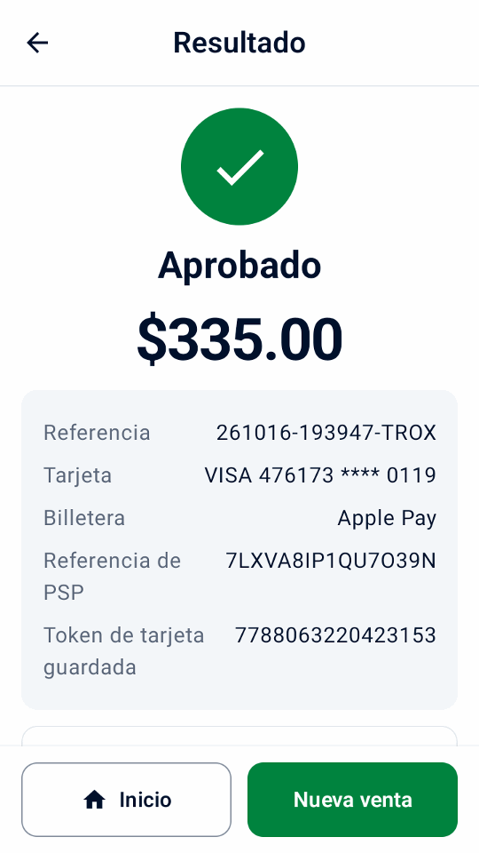

Guía
Prueba la demo
Prueba una venta, un recibo y un reembolso de ejemplo sin cuenta Adyen ni terminal.
Instalar la aplicación
Usa un teléfono o emulador con Android 9 o posterior.
- En el dispositivo, abra el enlace
de descarga directa o escanee este código con su cámara:

- Abra APK en el dispositivo y permita la instalación desde su navegador o administrador de archivos cuando Android lo solicite.
- En la pantalla de bienvenida, selecciona Pruebe una demostración y toca Continuar.
Haz una venta y un reembolso de ejemplo
- En Inicio, toca Nueva venta y elige un producto de ejemplo.
- Toca Cobrar, revisa el total y toca pagar.
- Revisa el recibo.
- Abre Historial, elige la venta y toca Reembolsar. Selecciona un reembolso completo y confirma.


Explora más escenarios de la demo
- En Configuración › Simulador, elija el resultado del pago, el retraso y si hay impresora. Active Aprobaciones sin conexión para ver las advertencias sin conexión en el historial y en la conciliación del terminal.
En Configuración › Datos y transferencia, use Agregar datos de muestra o Eliminar datos de muestra. Las muestras se etiquetan como demostraciones y cuentan en los totales e informes del día de demostración; agregarlas reemplaza los datos del negocio del recibo por una cafetería ficticia y agrega su logotipo si no hay uno. Eliminarlas conserva sus propios productos, historial, configuración y logotipo.
Los enlaces de pago funcionan sin conexión y sin credenciales de API, y sus pantallas y recibos se etiquetan como demostraciones. Sus códigos QR no pueden recibir pagos; toque Simular pago para completar uno.
El simulador muestra cómo se comporta Mini mPOS, no lo que admiten su terminal o su cuenta de Adyen. Funciones como la guía por audio, las aprobaciones sin conexión y las capacidades de Adyen se imitan, así que pruébelas en un terminal TEST real antes de depender de ellas.
La demostración también ofrece propinas en el terminal y Adyen Giving en el pago con sus interruptores apagados, y una tarjeta de regalo SVS en Tarjetas de regalo. Su historial de muestra incluye una propina, una donación, una aprobación sin conexión y una tarjeta guardada para la referencia de cliente CUST-1042, que puede cobrar desde Tokens. En Configuración › Simulador, defina un Recargo o una Aprobación parcial (%) menor que 100 para probar esos flujos; con 100, los montos que terminan en 139 se aprueban en parte, como con la tarjeta de prueba de Adyen. Al configurar pagos reales, Mini mPOS ofrece desactivar estas funciones de demostración, salvo que las conserve.
Continúa con la configuración real
¿Listo para conectarse? En Configuración › Simulador, toque Configurar pagos reales y luego Continuar con la configuración. Confirmar TEST o LIVE elimina todo el historial local; los productos de muestra y los datos del recibo se conservan, así que elimine las muestras y revise los datos del negocio antes de cobrar de verdad. Comience con TEST.